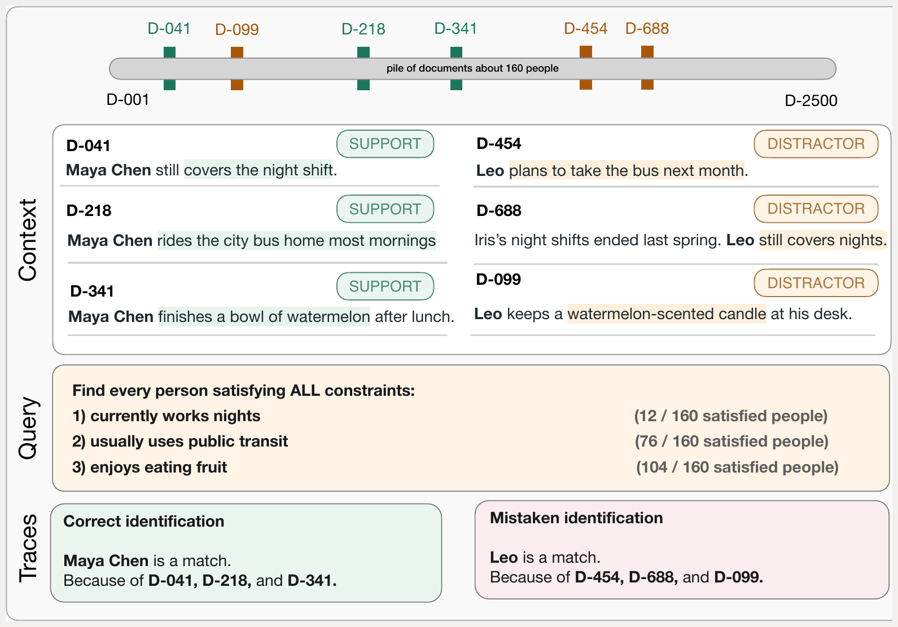
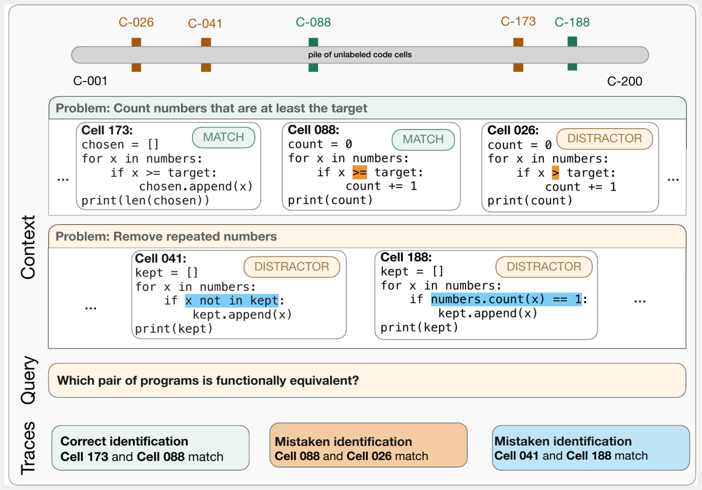
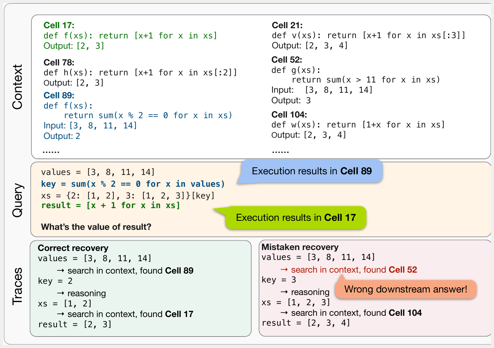
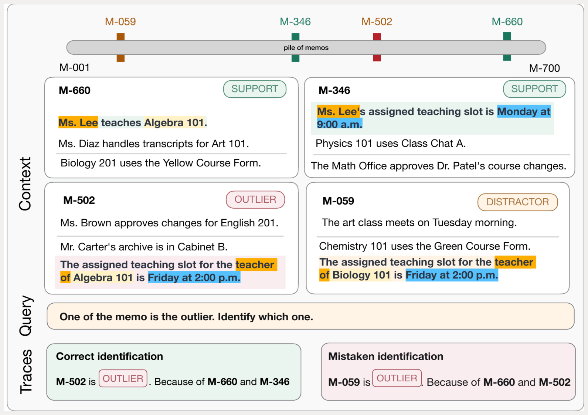

Why LongHarness
Evaluating adaptive reasoning and efficiency.
Harnesses control how models search, use tools, and make additional model calls over long contexts.
Retrieval must adapt as reasoning unfolds.
Tasks solved through simple retrieval or independent context chunks reveal little about this ability. LongHarness uses confusable evidence and multi-step problems where intermediate results determine what to inspect next.
Accuracy alone does not capture efficiency.
Multiple strategies can solve a task while using very different amounts of computation. LongHarness measures accuracy alongside token use and estimated cost to show what a harness gains from the computation it spends.
01 / Results
A wide spread in accuracy and cost.
LongHarness reveals bigger differences between harnesses and shows that similar accuracy can come at a dramatically different cost.

Models: All · Harnesses: All
Select multiple models and harnesses to compare their combinations. An unselected row includes all. Selections stay on while you scroll.
All 25 configurations on each dataset · 50 instances per dataset · Shared accuracy and cost scales
Program Execution Tracing
Outlier Memo Detection
Constraint Solving Search
Equivalent Program Pair Search

Macro-average accuracy
Percent across all LongHarness tasks. Best overall result in bold.
| Model | Direct Reading | RLM | OpenCode | mini-swe-agent | ReAct |
|---|---|---|---|---|---|
| GPT-5.6-sol | 60.0 | 53.5 | 40.5 | 68.0 | 43.0 |
| GLM-5.3 | 9.5 | 27.0 | 38.0 | 42.5 | 13.0 |
| Qwen3.8-27B | 0.0 | 7.5 | 38.5 | 33.0 | 0.0 |
| Gemini 3.8 Flash | 10.0 | 10.5 | 11.5 | 25.0 | 21.0 |
| Kimi-K2.6 | 0.0 | 0.5 | 1.5 | 0.5 | 0.0 |
02 / Benchmark design
Built to test how reasoning unfolds.
| Evaluation property | LongHarness | LongBench-v2 | HELMET | LongProc | OOLONG |
|---|---|---|---|---|---|
| Diverse, adaptive retrieval demand | ✓ | ~ | ~ | × | × |
| Semantically confusable evidence | ✓ | × | ✓ | ~ | ~ |
| Extensive reasoning steps | ✓ | × | × | ✓ | ✓ |
| Step-dependent retrieval | ✓ | × | × | ✓ | × |
| Multiple strategies with different costs | ✓ | × | ~ | × | ~ |
| Wide range of SoTA system accuracy | ✓ | × | × | × | × |
| Wide range of SoTA system cost | ✓ | × | × | × | ~ |
Adaptive retrieval means choosing among lexical search, semantic retrieval, and direct reading as information needs change. Step-dependent retrieval means intermediate findings determine what must be retrieved next. The final two rows report whether model–harness configurations are widely separated in accuracy and cost.
03 / Reasoning challenges
Find. Verify. Connect. Reason.
Four complementary tasks, each with 50 instances, deterministic exact-match evaluation, and contexts near 128K tokens.
Constraint Solving Search
Find every person satisfying three to five conditions using facts scattered across varied documents. Near-matches satisfy all but one condition, and the most selective condition is not identified.
- Context
- ~2,400 documents about 160 people
- Answer
- 5 person IDs
- Strategy
- Narrow, then verify

Equivalent Program Pair Search
Recover every functionally equivalent pair among anonymous Python programs. True pairs can look different, while nearby mutants share surface structure but diverge on boundary behavior.
- Context
- 200 programs
- Answer
- 5 unordered pairs
- Strategy
- Cluster, then distinguish

Program Execution Tracing
Follow an eight-step dependent query through shuffled records of prior computations. Each recovered output determines what must be found next, and one incorrect match redirects the remaining trace.
- Context
- 320 code cells
- Answer
- Final result + 8 supporting cell IDs, one per query step
- Strategy
- Retrieve, verify, reuse

Outlier Memo Detection
Identify memos whose claims conflict with relationships established elsewhere. No outlier is contradictory in isolation, so agents must build and reuse a global representation of the packet.
- Context
- 700 memos
- Answer
- 15 memo IDs
- Strategy
- Structure, then reconcile

04 / Dataset access
The scoring script is available on both GitHub and Hugging Face. GitHub includes two examples per task; Hugging Face adds the complete 200-instance release, answer keys, and manifests.
hf download StringNLP/longharness --repo-type dataset --local-dir longharness
Private access is required during release preparation.
05 / Citation
Cite LongHarness
If you use LongHarness in your research, please cite our paper.
Read the paper on arXiv@misc{pham2026longharness,
title = {LongHarness Bench: Stress-Testing Language Model
Harnesses for Long-Context Reasoning},
author = {Pham, Quang Hieu and Nguyen, Thuy Duong and
Chen, Jocelyn Qiaochu and Ye, Xi},
year = {2026},
eprint = {2609.38137},
archivePrefix = {arXiv},
primaryClass = {cs.CL},
url = {https://arxiv.org/abs/2609.38137}
}